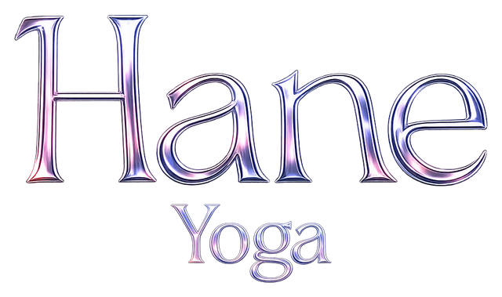
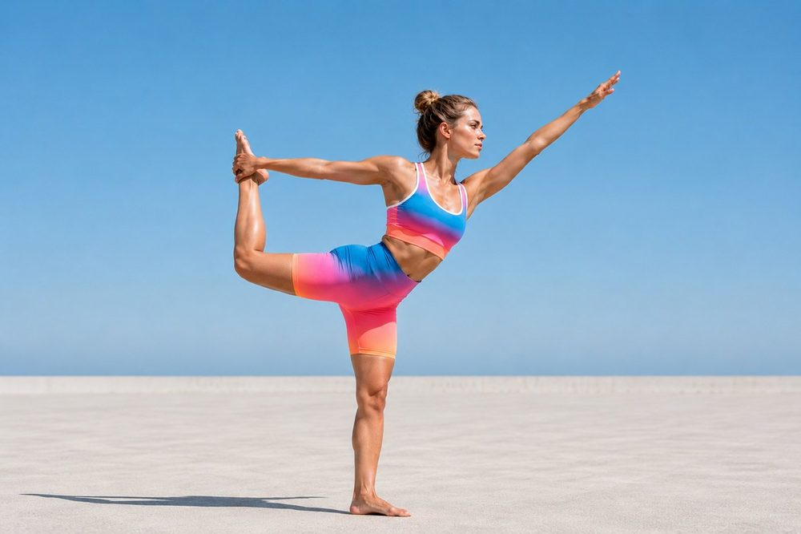

Hane tracks 33 points of your body and corrects you while you practice. No wearables, no video calls, nobody watching. Hane sigue 33 puntos de tu cuerpo y te corrige mientras practicas. Sin wearables, sin videollamadas, sin nadie mirando.
Your video never leaves your iPhone Tu video nunca sale de tu iPhone How it worksCómo funciona
Stand it up a couple of metres away. You need nothing else. Lo dejas de pie a un par de metros. No necesitas nada más.
The edge of the screen turns amber while you adjust and green when your alignment is right. A voice walks you through it. El borde de la pantalla se pone naranja mientras te ajustas y verde cuando la alineación es correcta. Una voz te lleva paso a paso.
The app times how long you take to settle into each pose and how many corrections you need. Improvement becomes data, not a feeling. La app cronometra cuánto tardas en entrar bien a cada postura y cuántas correcciones necesitas. La mejora es un dato, no una sensación.
A yoga video shows you the pose. Nobody tells you if you are doing it wrong. That is what a teacher does, and it is why a private class costs what it costs: someone looks at your body and corrects it. Un video de yoga te enseña la postura. Nadie te dice si la estás haciendo mal. Eso es lo que hace un profesor, y por eso una clase particular cuesta lo que cuesta: alguien mira tu cuerpo y te corrige.
Hane does that part. And because it measures every correction, after a month you can see whether you are actually improving or you have spent four weeks repeating the same mistake. Not even people who have practised alone for years know that. Hane hace esa parte. Y como mide cada corrección, al mes puedes ver si de verdad estás mejorando o llevas cuatro semanas repitiendo el mismo error. Eso no lo sabe ni quien lleva años practicando solo.
The difference between practising and repeating is that someone is watching. La diferencia entre practicar y repetir es que alguien mire.
Your price stays frozen for as long as you keep the subscription. It is not a deal that expires: it is the price that belongs to whoever arrives first. Once the 100 seats are gone, the plan goes to $79.99 a year. Tu precio queda congelado mientras mantengas la suscripción. No es una oferta que caduca: es el precio que le corresponde a quien llega primero. Cuando se acaben los 100 cupos, el plan pasa a $79,99 al año.
About what a single drop-in class costs. No lock-in: cancel whenever you want from your phone settings. Más o menos lo que cuesta una clase suelta. Sin permanencia: cancelas cuando quieras desde los ajustes de tu teléfono.
Go monthlyIr al plan mensualReference prices in US dollars. When you open the app you will see your country's price in your own currency. The subscription renews automatically unless you cancel at least 24 hours before; manage it from your Apple ID settings. Precios de referencia en dólares. Al abrir la app verás el precio de tu país en tu moneda. La suscripción se renueva automáticamente salvo que la canceles al menos 24 horas antes; puedes gestionarla desde los ajustes de tu Apple ID.
Detection runs entirely inside your iPhone. Frames are processed in memory and never recorded, stored or uploaded to any server. La detección corre entera dentro de tu iPhone. Los fotogramas se procesan en memoria y nunca se graban, ni se guardan, ni se suben a ningún servidor.
It is not a marketing promise: it is why the app works offline, and why the camera is not declared as collected data on our App Store listing. No es una promesa de marketing: es la razón por la que la app funciona sin conexión, y por la que la cámara no aparece declarada como dato recogido en nuestra ficha del App Store.
No. No band, no sensor, no accessory. Prop the iPhone up a couple of metres away and that is it.No. Ni pulsera, ni sensor, ni accesorio. Apoyas el iPhone a un par de metros y ya.
Yes, and that is probably when it helps most. Alignment correction exists precisely for people who have nobody to tell them their knee is landing wrong.Sí, y probablemente es cuando más sirve. La corrección de alineación existe precisamente para quien no tiene a nadie que le diga que está apoyando mal la rodilla.
The founding plan is withdrawn and the regular yearly plan remains. Whoever already joined keeps renewing at their price for as long as they keep the subscription: Apple guarantees that, not us.El plan de fundador se retira y queda el anual regular. Quien ya entró sigue renovando a su precio mientras mantenga la suscripción: eso lo garantiza Apple, no nosotros.
Whenever you want, from your Apple ID settings. If you cancel during the 7-day trial, nothing is charged.Cuando quieras, desde los ajustes de tu Apple ID. Si cancelas durante los 7 días de prueba, no se cobra nada.
Yes. Pose detection is on-device, so you can practise in airplane mode. A connection is only needed to create an account and manage the subscription.Sí. La detección de postura es on-device, así que puedes practicar en modo avión. La conexión solo hace falta para crear la cuenta y gestionar la suscripción.
Not yet. Hane started on iPhone because on-device detection depends on the chip; when Android exists we will say so here.Todavía no. Hane nació en iPhone porque la detección on-device depende del chip; cuando exista Android lo diremos aquí.
No card. The clock starts on your first practice, not when you download. Sin tarjeta. El reloj arranca en tu primera práctica, no al descargar.
Download Hane YogaDescargar Hane Yoga